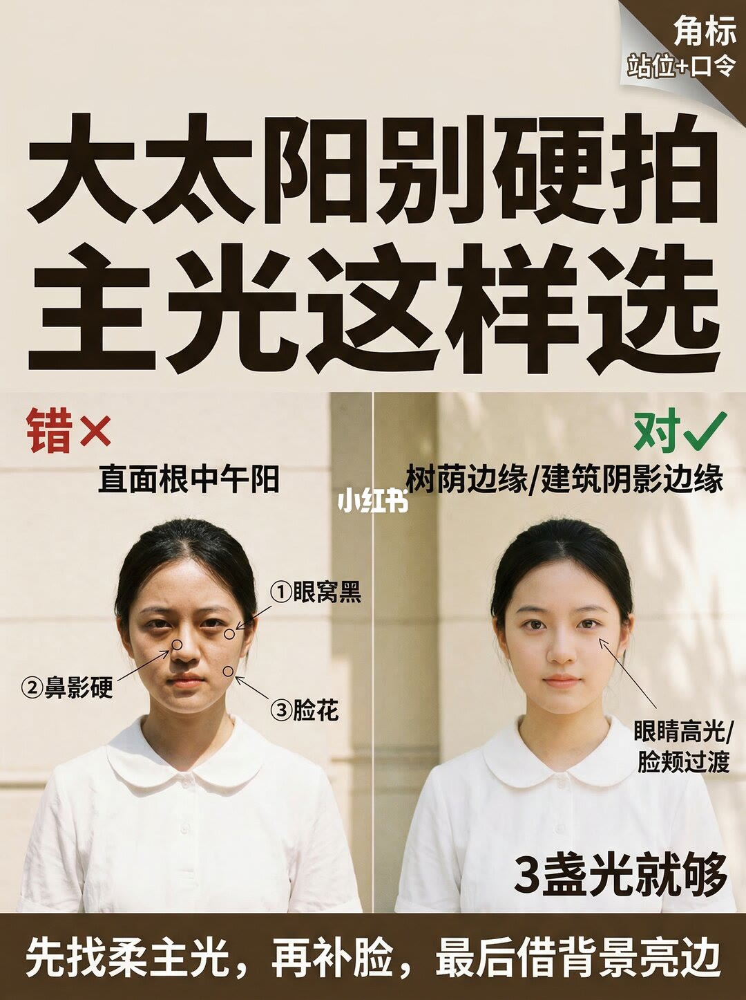
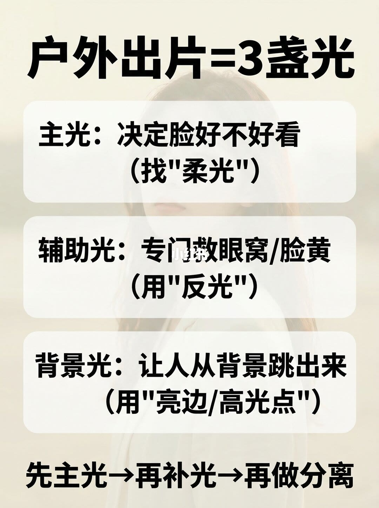
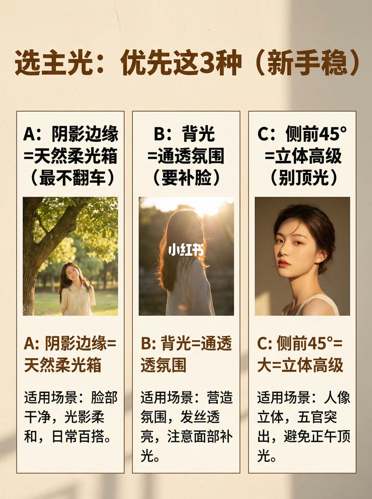
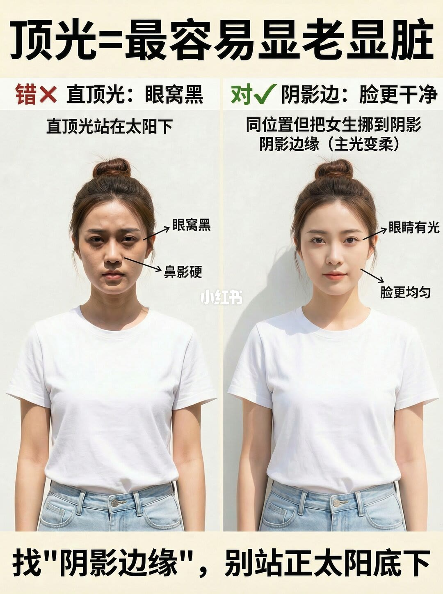
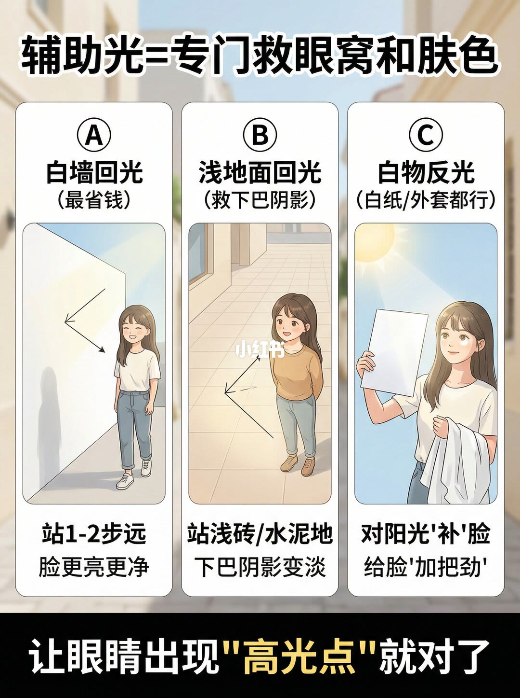
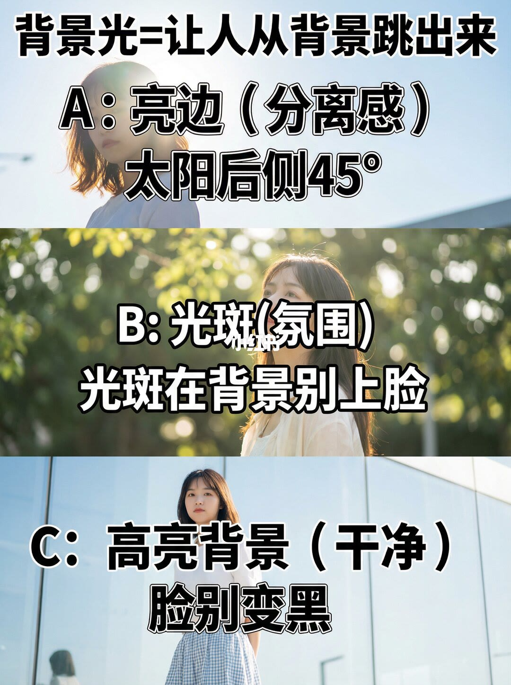
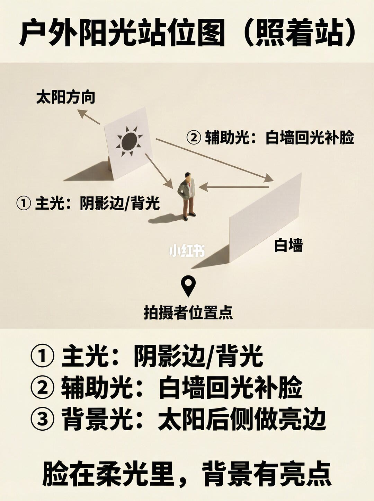
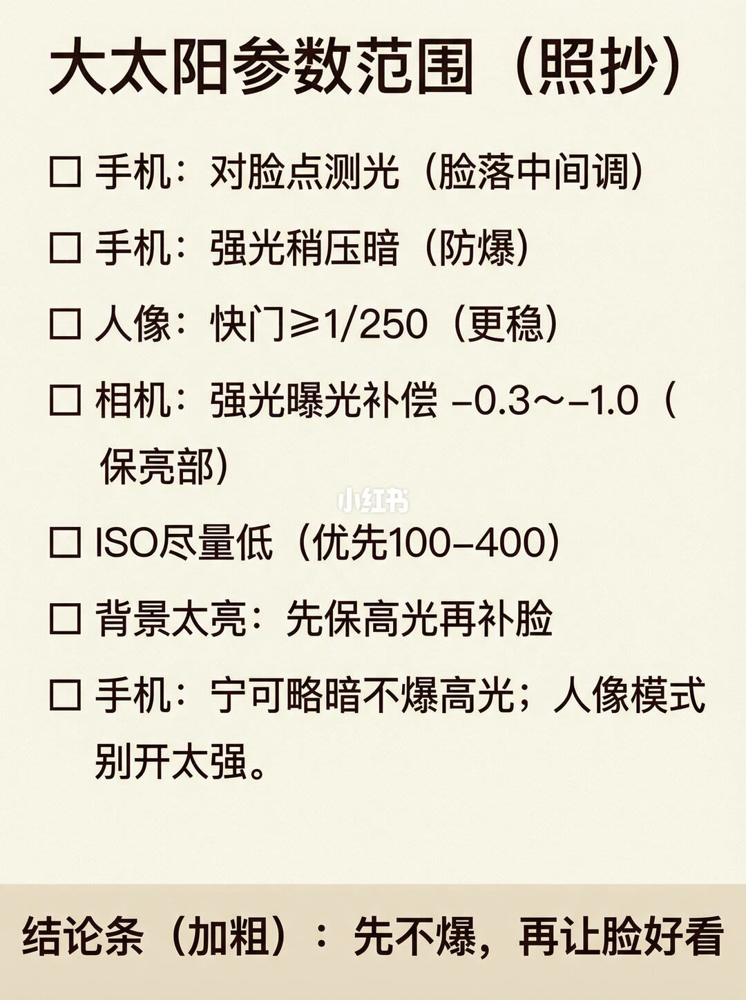
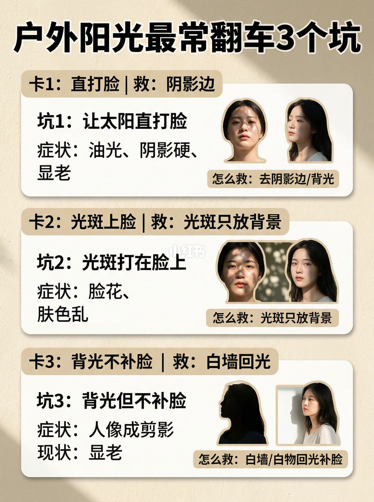

图文实录 · 小红书 · 爱拍照的七十(努力涨粉中)
大太阳别硬拍：主光这样选
大太阳底下不要站在直顶光里硬拍。主光优先选阴影边缘，其次才是要补脸的背光，或避开顶光的侧前 45°。脸先落到柔光里，再用白墙、浅地或白纸把眼窝补上，最后借后侧亮边和背景光斑把人从背景里分开。
1/9
封面：直顶光和阴影边缘

标题是「大太阳别硬拍 主光这样选」，角标写「站位+口令」。左栏「直面正午太阳」标了三处：眼窝黑、鼻影硬、脸花。右栏「树荫边缘/建筑阴影边缘」指向眼睛高光和脸颊过渡，并写「3盏光就够」。底栏口令是：先找柔主光，再补脸，最后借背景亮边。
2/9
户外先分成三盏

大字是「户外出片 = 3 盏光」。主光决定脸好不好看，去找柔光。辅助光专门救眼窝和脸黄，用反光。背景光让人从背景跳出来，用亮边和高光点。页底顺序：先主光，再补光，再做分离。这一页没有给三盏的亮度比例。
3/9
主光优先这三种

标题「选主光：优先这3种（新手稳）」。A：阴影边缘等于天然柔光箱，适用脸部干净、光影柔和、日常百搭，旁注最不翻车。B：背光等于通透氛围，适用营造氛围、发丝透亮，但要补脸。C：侧前 45° 等于立体高级，适用五官突出，并写别用正午顶光。三栏各有一张示例人像，拍摄参数没有印出来。
4/9
同一处，从太阳底下挪到阴影边

标题「顶光=最容易显老显脏」。错的一侧是直顶光站在太阳下，箭头指向眼窝黑和鼻影硬。对的一侧写阴影边、脸更干净，说明是同一位置把人挪到阴影边缘，主光变柔，并指向眼睛有光、脸更均匀。页底：找阴影边缘，别站正太阳底下。页上没有写出软硬的数值。
5/9
辅助光只负责眼窝和肤色

标题「辅助光=专门救眼窝和肤色」。A 白墙回光，标成最省钱：站 1 到 2 步远，脸更亮更净。B 浅地面回光，用来救下巴阴影：站浅砖或水泥地，下巴阴影变淡。C 白物反光，白纸或外套都行，对着阳光给脸补一口。底栏：让眼睛出现高光点就对了。三栏是示意图，不是测光表。
6/9
背景光把人从背景里拉开

标题「背景光 = 让人从背景跳出来」。A 亮边负责分离感，太阳放在后侧 45°。B 光斑负责氛围，光斑放在背景，别打到脸上。C 高亮背景负责干净，同时写脸别变黑。三张示例都没有标曝光数字。
7/9
一张站位图把三盏合上

标题「户外阳光站位图（照着站）」。示意图标出太阳方向、白墙和拍摄者位置。能读清的三盏是：主光用阴影边或背光；辅助光用白墙回光补脸；背景光用太阳后侧做亮边。大字结论：脸在柔光里，背景有亮点。太阳、白墙和人之间的米数没有标，左右以原图为准，文字层无法再确认精确夹角。
8/9
参数是曝光范围，不是光比

标题「大太阳参数范围（照抄）」。手机对脸点测光，让脸落在中间调；强光里稍压暗，防高光溢出。人像快门大于等于 1/250，求稳。相机在强光下曝光补偿约 −0.3 到 −1.0，用来保亮部。感光度尽量低，优先 100 到 400。背景太亮时先保高光，再补脸。手机宁可略暗，也不要爆掉高光；人像模式别开太强。结论条：先不爆，再让脸好看。这一页没有主光和辅光的光比。
9/9
三个最常翻的坑

标题「户外阳光最常翻车3个坑」。坑 1：让太阳直打脸，症状是油光、阴影硬、显老，救法是去阴影边或改成背光。坑 2：光斑打在脸上，症状是脸花、肤色乱，救法是光斑只放背景。坑 3：背光但不补脸，症状是人像成剪影、显老，救法是白墙或白物回光补脸。每坑都是左右对照，没有新的曝光数字。
收尾
先换主光，再补，再分离
结论
大太阳别硬拍，指的是别把正午直顶光当主光。主光先选阴影边缘；要氛围再用背光，但必须补脸；要立体再用侧前 45°，并躲开顶光。辅助光用白墙、浅地或白纸，看到眼睛高光点就算补上。背景光用后侧亮边、背景光斑或干净的高亮背景，光斑不上脸，脸也不要变成剪影。曝光上先保住高光，再让脸好看。
支撑页
对照和口令在 1/9。三盏分工和顺序在 2/9。三种主光在 3/9，顶光与阴影边的挪位在 4/9。三种补光在 5/9，三种背景光在 6/9。站位合图在 7/9。曝光范围在 8/9。三个坑和救法在 9/9。
边界
九页都没有印出主光与辅光的光比。第 8 页的 1/250、−0.3 到 −1.0、100 到 400 是照抄的曝光范围，不是现场测得的光比。第 5 页的 1 到 2 步是站位距离。第 7 页没有米数。示例人像是否同一人、是否实拍，画面无法确认。笔记文案写了法令纹深；九页标注能确认的是眼窝黑、鼻影硬、脸花，以及第 2 页的脸黄，法令纹有没有单独箭头无法确认。